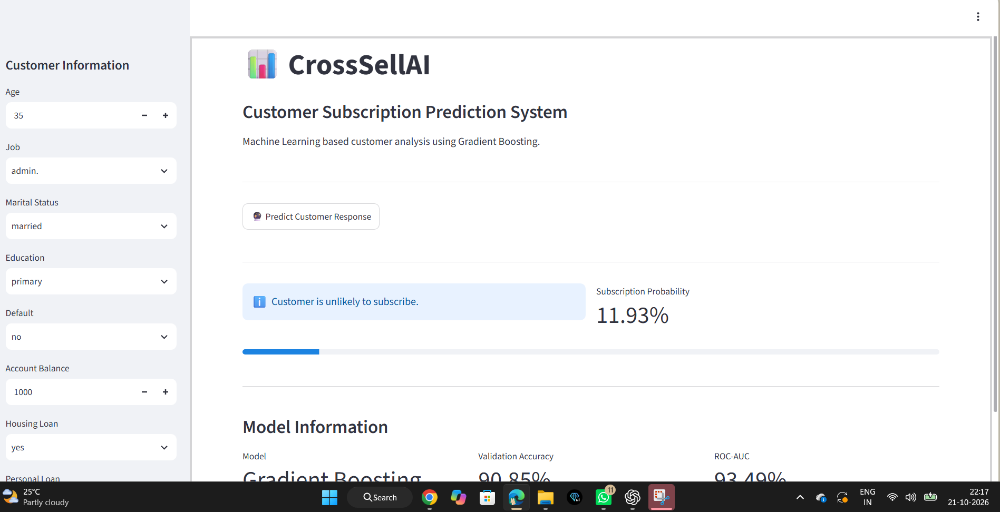
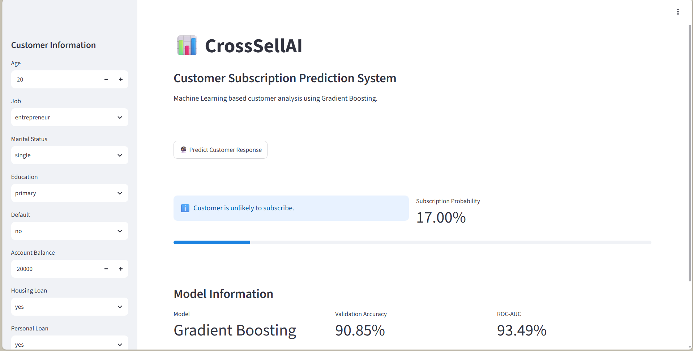
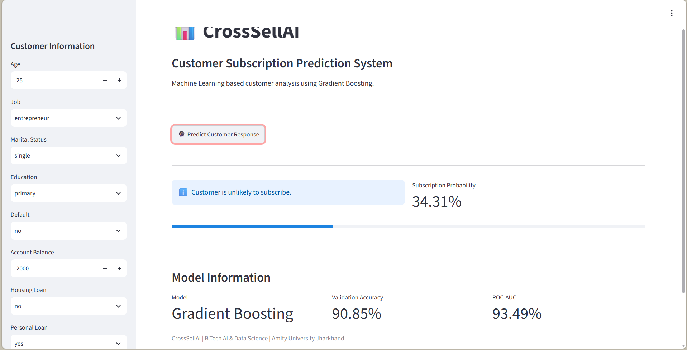
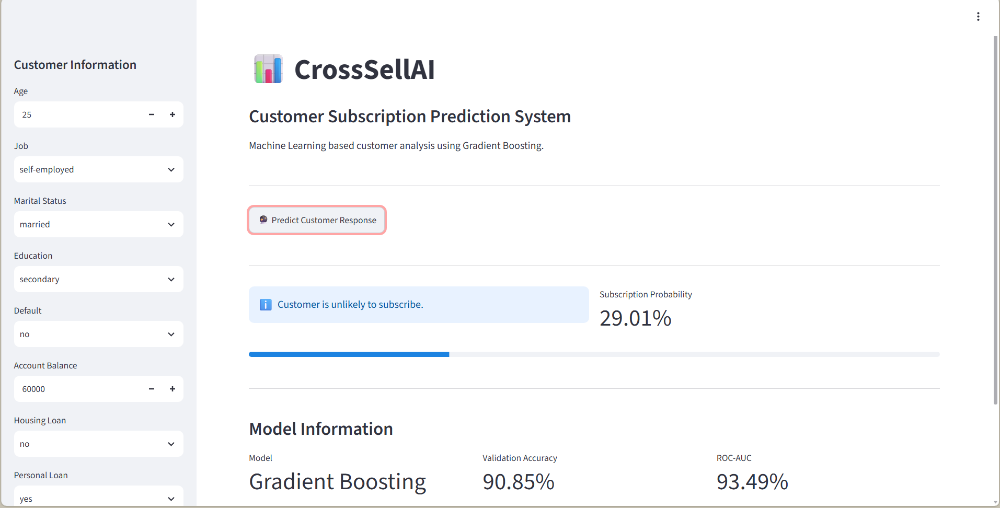

Customer Subscription Prediction
CrossSellAI uses a Gradient Boosting Classifier to estimate the probability that a customer will subscribe to an additional product.
Model
Gradient Boosting Classifier
25,317 training records · 6,330 validation records
Validation accuracyDeployment
Interactive Streamlit application with saved model and preprocessor.
Files: crosssell_model.pkl · crosssell_preprocessor.pkl
Model Analytics
Performance measured on the unseen validation set.
| Metric | Score |
|---|---|
| Validation Accuracy | 90.85% |
| ROC-AUC | 93.49% |
Class: No
Precision 0.93
Recall 0.97
F1 0.95
Support 5587
Class: Yes
Precision 0.68
Recall 0.41
F1 0.51
Support 743
Overall
Macro F1 0.73
Weighted F1 0.90
Binary classification
Prediction Case Studies
Four actual executed cases documented in the final NTCC report.

Case 1 · 11.93%
Age 35 · admin. · married · primary · balance 1000 · housing loan yes

Case 2 · 17.00%
Age 20 · entrepreneur · single · primary · balance 20000 · dual loans

Case 3 · 34.31%
Age 25 · entrepreneur · single · primary · balance 2000 · no housing loan

Case 4 · 29.01%
Age 25 · self-employed · married · secondary · balance 60000 · no housing loan
Dataset & Features
Customer demographic and financial attributes used for subscription prediction.
| Feature | Type | Description |
|---|---|---|
| Age | Numerical | Customer age |
| Job | Categorical | Employment type |
| Marital Status | Categorical | Marital state |
| Education | Categorical | Education level |
| Default | Binary | Credit default indicator |
| Account Balance | Numerical | Average yearly account balance |
| Housing Loan | Binary | Housing loan indicator |
| Personal Loan | Binary | Personal loan indicator |
| Target / Response | Binary | Subscription outcome |
System Methodology
Preprocessing
Categorical variables are encoded and the processed feature matrix contains 51 features.
Training
25,317 records are used to train the Gradient Boosting Classifier.
Validation
6,330 unseen records are used for final evaluation.
Technology Stack
PythonPandasNumPyScikit-learnJoblibStreamlitGoogle ColabAbout CrossSellAI
CrossSellAI is an NTCC academic project focused on customer subscription prediction using machine learning.
The final implementation uses a Gradient Boosting Classifier and an interactive Streamlit interface that accepts customer attributes and returns a subscription probability.
Student: Shivam Pratham
Program: B.Tech – Artificial Intelligence & Data Science
University: Amity University Jharkhand, Ranchi
Academic Year: 2026